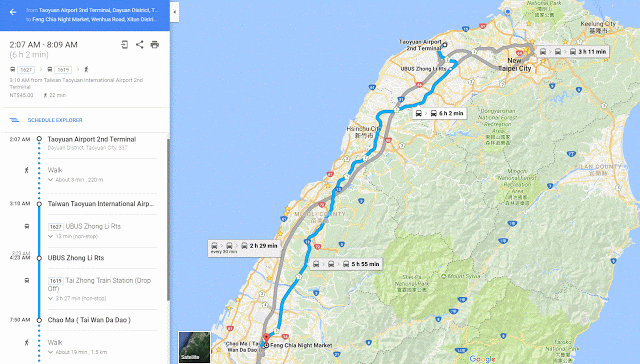
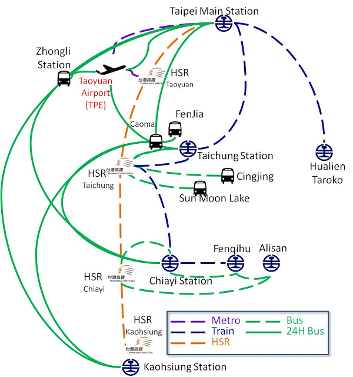
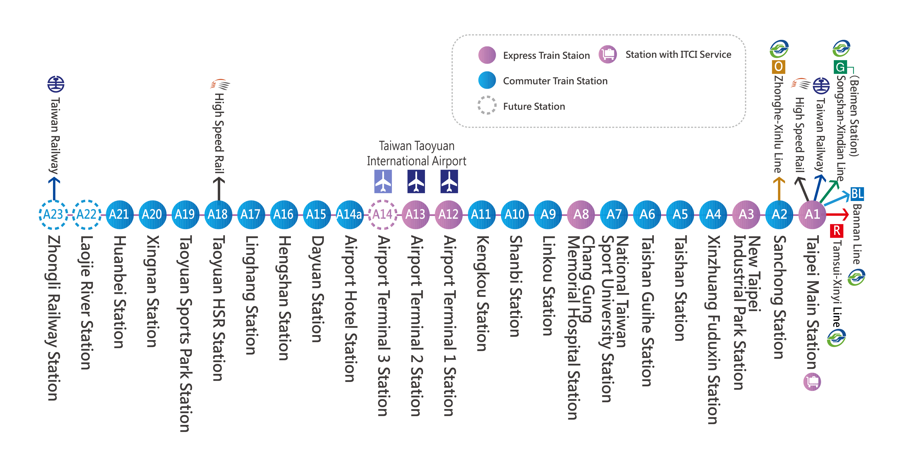
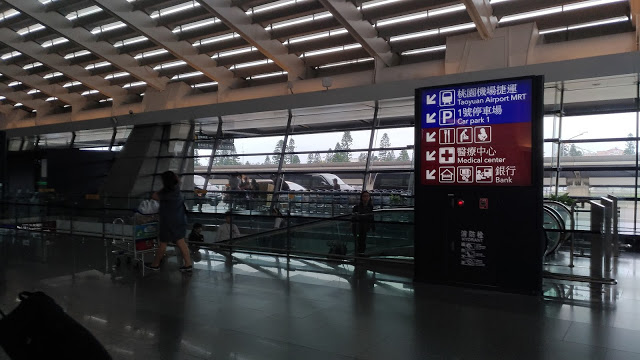
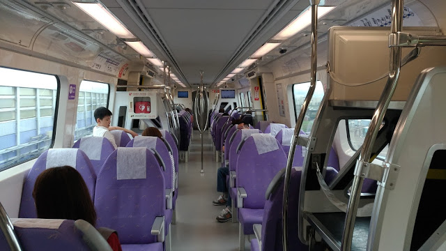

Transportation of Taoyuan Airport | Travel Taiwan

Transportation of Taoyuan Airport
Transportation is always the most difficult part of itinerary arrange. It is not easy to understand the transportation system of a city that you have never been. The transportation may be different at different time. The transfer information may confuse passengers as well. The most frustrating part is that you have studied the transportation information for a few hours but you find the information not useful to your itinerary. I know the difficulty well since I travel so often. Therefore, the order of following material is according to your need when you arrange your itinerary. Before figure out the airport transportation, you need to know which airport you flight will land. You should check your itinerary in advance too since lots foreigners find that their itinerary is not doable after studying the information for a few days.
Airport Code The first thing need to be clarified is the name of the airport. The airport codes may confuse you. There are 2 airports around Taipei, Taoyuan Airport(TPE) &Taipei Songshan Airport (TSA). Taoyuan Airport(TPE) is the biggest civil airport in Taiwan. It is about 50 km away from Taipei. Taipei Songshan Airport (TSA) is is located in the metro area of Taipei. Because of space limit, most flight stop at Taoyuan Airport(TPE) &Taipei Songshan Airport (TSA). If your arriving airport is TSA, you may not need the following information. If your flight arrives Taoyuan Airport(TPE), make sure you inquire the correct information. Taoyuan Airport(TPE) is50km away Taipei. Taipei Shongshan Airport(TSA) is located in Taipei
Google Maps Google Maps is a useful tool in Taiwan. It collect the time tables of train, high speed railway, bus, metro. It also have most attractions in English. It can give you some reliable alternatives with details including time, stop location, transfer information. Remember to input your planning hour when you check the transportation suggestion from Google Maps.. Since most transportation timetables are input in Google Maps, the solutions are different at different time.
About Your Itinerary Planning Therefore, there are some points you should know before reading the following introduction about the airport transportation. From some traveling forums, there are always questions asking the wrong or indirect questions. Some foreigner visitors may choose to take HSR to Fenjia night market. However, the transportation becomes: Taoyuan Airport(Metro)-> HSR Taiyuan(HSR)->HSR Taichung->(Bus 160)Fenjia Night Market. Taking Bus 1623 to Chaoma and then taking taxi(about NTD 100) or bus to Fenjia Night Market is a simple and cheaper solution. The following tips is important to your itinerary arrangement. Your itinerary affects the public transportation information you need when you arrive the airport.
Arrangement daily itinerary is not independent.
Lots visits arrange their daily itinerary independent. For examples, some foreigner visitors arrive the airport in the afternoon and they plan to go to Hualien in the evening. However, it may be not doable. Going to Taipei first and have a day trip to Taroko from Taipei would be a better alternative.
Your final destiny matters
A lots questions are not specific. For example, some ask how to go to Taichung but they don't mention that their destiny is Fenjia Night Market. The public transportation methods to Taichung may different. The fastest public transportation to Taichung may be HSR, but the fastest public transportation to Fenjia Night Market maybe shuttle bus since you don't need to transfer and the bus stop is closer to Fenjia Night Market than HSR station. Therefore, make sure your destiny. Asking a destiny other than your final destiny may put your itinerary in risk.
Another misunderstanding is that train stations and HSR stations may be at the same station or may be ad different stations. Taipei Train Station and HSR Taipei Station are in Taipei Main Station, but Taichung Train Station and HSR Station are not in the same station.
Be aware of the stations. Train stations and HSR stations may be at the same station or may be ad different stations.
Sun Moon Lake
Taoyuan Airport->HSR Taoyuan Station->HSR Taichung Station->Sun Moon Lake
The following tables are quick checking tables for your itinerary arrangement, one is for regular hour and one is for midnight(12 am~6 am). If you cannot find a airport transportation method that matches your itinerary, maybe you should rearrangement your itinerary. Be noted that the estimated duration is only for the transportation itself. The duration doesn't include the time need to transfer. The transfer hour may take one hour or 5 minutes, depending on your luck.
Regular Transportation
Taoyuan Airport(TPE) is the most popular airport for foreign visitors who visit Taiwan. Therefore, the transportation is one of the most common questions. The transportation questions include how to go to other cities, what bus is available in the midnight, and etc.

Regular Transportation
Midnight Transportation
The first thing need to be clarified is the name of the airport. The airport codes may confuse you. There are 2 airports around Taipei, Taoyuan Airport(TPE) &Taipei Songshan Airport (TSA). Taoyuan Airport(TPE) is the biggest civil airport in Taiwan. It is about 50 km away from Taipei. Taipei Songshan Airport (TSA) is is located in the metro area of Taipei. Because of space limit, most flight stop at Taoyuan Airport(TPE) &Taipei Songshan Airport (TSA). If your arriving airport is TSA, you may not need the following information. If your flight arrives Taoyuan Airport(TPE), make sure you inquire the correct information.
Taoyuan Airport(TPE) is50km away Taipei. Taipei Shongshan Airport(TSA) is located in Taipei


The following tables are quick checking tables for your itinerary arrangement, one is for regular hour and one is for midnight(12 am~6 am). If you cannot find a airport transportation method that matches your itinerary, maybe you should rearrangement your itinerary. Be noted that the estimated duration is only for the transportation itself. The duration doesn't include the time need to transfer. The transfer hour may take one hour or 5 minutes, depending on your luck.
Regular Transportation Destiny Midnight(12am~6am) Transportation Duration Taipei Main Station T1/T2(KuoKuang Bus 1819)→Taipei Main Station 60m Taichung Station Fenjia Night Market T1/T2(Kuo-Kuang Bus 1860)→Chaoma (Taichung Station)
Chaoma(Taxi/Bus 54⁄160)→Fenjia
T1/T2(UBus 1627)→Zhongli Service Area Zhongli Service Area(UBus 1619)->Chaoma(Taichung) Chaoma(Taxi)→Fenjia 120m
5m
30m 120m 5m HSR Taichung Sun Moon Lake NA NA Chiayi Station Alisan NA NA Kaohsiug St Kenting T1/T2(UBus 1627)→Zhongli Service Area Zhongli Service Area(UBus 1610)->Kaohsiung Station NA 25m 240m
Hualien/Taroko NA NA p.s.The last bus of Kuo-Kuang Bus 1860 to Taichung is 1:50am (a extra run 2:30am in Sat.)
The midnight transportation is much difficult. Only Taipei, Taichung and Kaohsiung is reachable in the midnight. You can also go to Taipei or Taichung and then transfer to other cities, e.g. Tainan, Chiayi, since the bus between major cities are 24h. However, the transfer hour will make you exhausted in the midnight.
There are more and more budget flights to Taiwan. Lots budget flight arrive Taoyuan Airport in the midnight (0 am~6 am). You may stay at the airport until sunrise. However, you could also take 24H bus to Taipei or Taichung directly. The following timetable is for bus schedule between 00:00~06:00. All the bus line will go to T1 or T2. It takes about 5 minutes between T1 & T2. If the bus launch from T2 at 01:00, then you can estimate that the bus will arrive T2 around 01:05.
Taipei (Taipei Main Station):Kuo-Kuang Bus 1819 Launch from T2: 00:00, 00:15, 00:30, 00:45, 01:00, 01:15, 01:30, 01:50, 02:20, 03:20, 04:20, 05:00, 05:30, 05:50
Taichung (Caoma, Taichung Station): Kou-Kuang Bus 1860 : Launch From T1: 00:10, 01:10, 01:50
Since Taoyuan Airport is closed to freeway and there are 24H bus running between Taipei, Taichung, Chiayi, Tainan and Kaohsiung on the freeway, you can take go to Zhongli Service Area first and take other bus to your destiny. From some feedback, the tickets of bus 1819 to Taipei maybe sold out. If you don't want to take taxi and you don't want to take 1819, you can take 1627 first and then transfer to Taipei.
Zhongli Service Area: Ubus 1627 Launch from T1: 00:00, 01:00, 03:00, 04:00, 04:30, 05:00, 05:30, 06:00
   Billboard shows the next train is commuter Train Although the name of Taoyuan Airport MRT at Taipei Main Station is the same as HSR, Train, Taipei MRT, there is 350m between the ariport MRT to Taipei Main Station(HSR, Taipei MRT, Train). Aisle to Taipei Main Station You can use easycard and iPASS directly at the airport MRT. You can use Easycard and iPASS at Taipei MRT, almost all buses in Taiwan, convenient stores including 7-11 familymart, Therefore you can buy a easycard or iPASS at the convenient stores or the airport station and use the card to pass the gate. MRT accept easycard and iPASS Because the Taoyuan Airport MRT connect the airport and HSR station, your itinerary could be more flexible. You can go to Taichung, Kaohsiung, Chiayi via High Speed Railway. Taiwan High Speed Railway